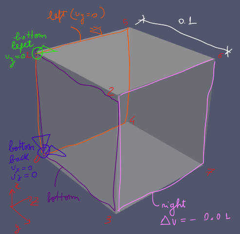
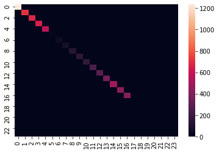

Eigenvalue analysis
Objective?
-
find the eigenvalues of the system matrix during the solution procedure of a specific nonlinear problem.
Expected results?
-
eigenvalue evolution for each nodes (average of displacement) plotted as contour using paraview.
-
condition number evolution through time steps.
Why?
The condition number is related to convergence properties of Krylov subspace methods.
Preconditioning improves convergence by clustering eigenvalues and hence reduces the condition number.
If we know how the nonlinear behavior affects the eigenvalues we can use this information in the preconditioning process.
Methods?
Strategy
-
setup a simple test problem in edelweissFE.
-
implement the function to compute the eigenvalue of the system matrix after each Newton step (outer).
-
implement a visualization routine
-
eigenvalue as nodal value (average between dofs)
-
eigenvalue condition number (max/min) over time step
-
-
run analysis on more elaborate.
Python library to compute eigenvalues
Numpy has a linalg.eigvals(a) function that computes the eigenvalues of a general matrix.
The eigenvalues are returned in the same order they appear in matrix.
import numpy as np
D = np.diag((19, 17, 1, 3, 2))
eigvals = np.linalg.eigvals(D)
print(eigvals)[19. 17. 1. 3. 2.]
Running edelweissFE
edelweissfe is an alias to python in the correct environment and to the edelweissfe.py script.
cd simple-test
edelweissfe simple.inp
total size of eq. system: 24 feCore
+--------------------------------------------------------------------------------------------------+
Converting elSet all to a nSet due to requested nodal results displacement
Using 12 threads NISTPSolver
+--------------------------------------------------------------------------------------------------+
increment 0: 0.000000, 0.000000; time 0.000000 to 0.000000 NISTPSolver
displacement NISTPSolver
||R||∞ ||ddU||∞ NISTPSolver
0.00e+00✓ 0.00e+00✓ NISTPSolver
Converged in 1 iteration(s) NISTPSolver
sig22, elementResult: [-0.] Monitor
+--------------------------------------------------------------------------------------------------+
increment 1: 1.000000, 1.000000; time 0.000000 to 1.000000 NISTPSolver
displacement NISTPSolver
||R||∞ ||ddU||∞ NISTPSolver
0.00e+00✓ 0.00e+00✓ NISTPSolver
Converged in 1 iteration(s) NISTPSolver
sig22, elementResult: [-0.] Monitor
+-------------------------------------+-------------------------------------+ NISTPSolver
|Time in elements | 0.0097s | NISTPSolver
|Time in distributed loads | 0.0001s | NISTPSolver
|Time in body forces | 0.0000s | NISTPSolver
|Time in constraints | 0.0000s | NISTPSolver
|Time in dirichlet R | 0.0001s | NISTPSolver
|Time in CSR generation | 0.0004s | NISTPSolver
|Time in dirichlet K | 0.0001s | NISTPSolver
|Time in linear solve | 0.0108s | NISTPSolver
|Time in convergence check | 0.0003s | NISTPSolver
+-------------------------------------+-------------------------------------+ NISTPSolver
+--------------------------------------+--------------------------------------+ feCore
|Step computation time | 0.0859s | feCore
+--------------------------------------+--------------------------------------+ feCore
Using 12 threads NISTPSolver
+-------------------------------------------------------------------------------------------------------+
increment 0: 0.000000, 0.000000; time 1.000000 to 1.000000 NISTPSolver
displacement NISTPSolver
||R||∞ ||ddU||∞ NISTPSolver
0.00e+00✓ 0.00e+00✓ NISTPSolver
Converged in 1 iteration(s) NISTPSolver
skipping output for zero-increment in step 2 Ensight Export
sig22, elementResult: [-0.] Monitor
+-------------------------------------------------------------------------------------------------------+
increment 1: 1.000000, 1.000000; time 1.000000 to 2.000000 NISTPSolver
displacement NISTPSolver
||R||∞ ||ddU||∞ NISTPSolver
7.17e-16✓ 1.00e-02 NISTPSolver
2.64e-16✓ 2.48e-18✓ NISTPSolver
Converged in 2 iteration(s) NISTPSolver
sig22, elementResult: [1800.] Monitor
+---------------------------------------+---------------------------------------+ NISTPSolver
|Time in elements | 0.0071s | NISTPSolver
|Time in distributed loads | 0.0001s | NISTPSolver
|Time in body forces | 0.0000s | NISTPSolver
|Time in constraints | 0.0000s | NISTPSolver
|Time in dirichlet R | 0.0001s | NISTPSolver
|Time in CSR generation | 0.0006s | NISTPSolver
|Time in dirichlet K | 0.0001s | NISTPSolver
|Time in linear solve | 0.0066s | NISTPSolver
|Time in convergence check | 0.0006s | NISTPSolver
+---------------------------------------+---------------------------------------+ NISTPSolver
+-----------------------------------------+-----------------------------------------+ feCore
|Step computation time | 0.0456s | feCore
+-----------------------------------------+-----------------------------------------+ feCore
|Job computation time | 0.1315s | feCore
+-------------------------------------------+-------------------------------------------+ feCore
Checking
paraview.exe simple-test/test.caseResults
Simple example
Description
Single element with 8 nodes and 3 degrees of freedom per node.
Reading the eigenvalues
import numpy as np
time_step = [0, 1]
eigvals = []
for i in time_step:
eigvals.append(np.load(f"simple-test/eigenvalues_{i}.npy"))
print(eigvals)
[array([1.23811313e+03, 7.05151972e+02, 6.68982435e+02, 6.48173861e+02,
5.73026612e+02, 1.98781798e+01, 5.13089800e+01, 7.07402572e+01,
1.28163962e+02, 1.58758348e+02, 1.67894112e+02, 2.42820965e+02,
2.76313008e+02, 3.66106570e+02, 4.85038681e+02, 4.44600300e+02,
4.23546899e+02, 1.00000000e+00, 1.00000000e+00, 1.00000000e+00,
1.00000000e+00, 1.00000000e+00, 1.00000000e+00, 1.00000000e+00]), array([1.14180987e+03, 6.85802817e+02, 6.39536508e+02, 2.09685217e+01,
5.80573221e+01, 1.19868895e+02, 1.60609754e+02, 2.44274278e+02,
4.99719600e+02, 3.22140204e+02, 3.68852459e+02, 4.31019322e+02,
4.06872066e+02, 1.00000000e+00, 1.00000000e+00, 1.00000000e+00,
1.00000000e+00, 1.00000000e+00, 1.00000000e+00, 1.00000000e+00,
1.00000000e+00, 1.00000000e+00, 1.00000000e+00, 1.00000000e+00])]
System matrix heatmap
import seaborn as sns
import matplotlib.pyplot as plt
for i in time_step:
fig, ax = plt.subplots()
sns.heatmap(np.diag(eigvals[0]))
Eigenvalues as nodal scalar field
References
-
Elman, H. C., Silvester, D. J., & Wathen, A. J. (). Finite elements and fast iterative solvers: with applications in incompressible fluid dynamics. : Oxford University Press.